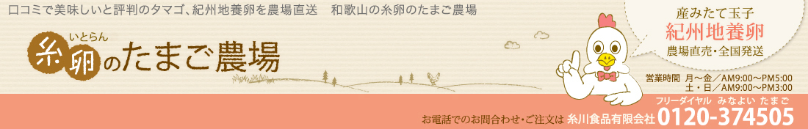
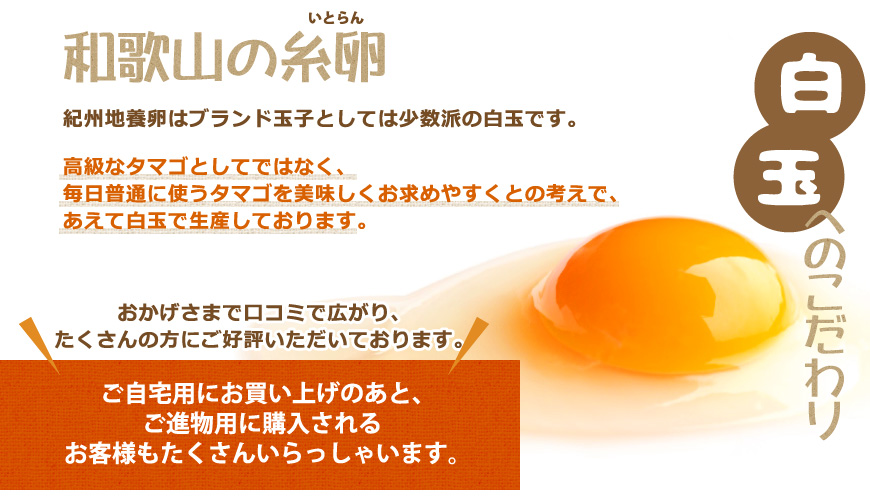
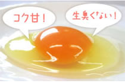
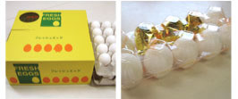
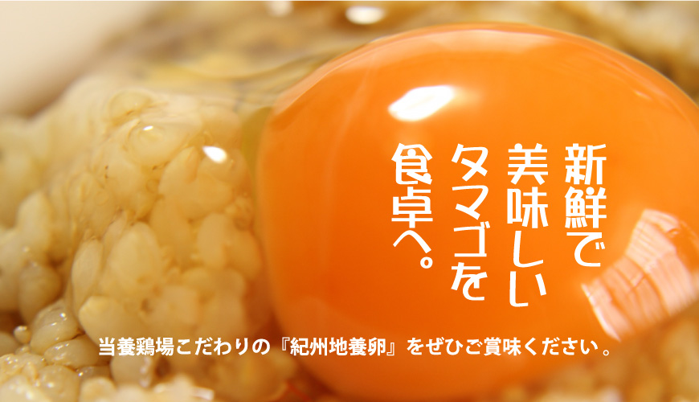
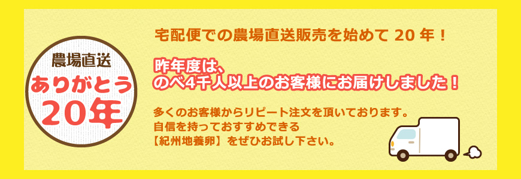
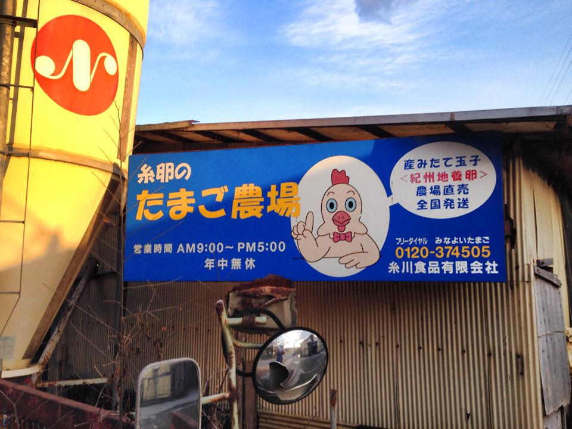

紀州地養卵とは？
紀州地養卵は自然に生殖している広葉樹のブナ、ナラの樹液と酵素、海藻、ヨモギ粉末等の漢方処方箋の純天然飼料を与えて作りました。高品質の玉子です。
還元糖の含量が非常に高く、口に含んだ段階で甘みが強く、コクのある状態がすぐわかります。これは樹液や海藻中に含まれる成分の相乗効果の表れであり、さらに通常に比べると約３倍程度の鮮度が保持され、いつでも新鮮な状態を保っています。
又、アンモニア・アミノ酸等を自然に分解無臭化しますので、商品となっても生臭くなく、みなさまから喜ばれています。
クチコミで広まった糸卵の紀州地養卵
口コミで広まり、たくさんの方にご好評いただいております、糸卵のたまご。いつもご利用いただいているみなさま、どうもありがとうございます。
全国の皆様にも美味しい玉子をお届けできれば幸いです。今後も更に高品質な玉子作りを目指して研究してまいります。よろしくお願い致します。
生産者の声
生き物はエサが大事です。糸卵の鶏たちには、純正の天然飼料を与えているので、とても健康で元気です。
大自然の恩恵を受けた鶏達の美味しい玉子、是非ご賞味下さい。
お知らせ
- 2020/03/10
- 糸卵ホームページのテストをWebに公開しました。
- 2020/01/20
- PayPayによる電子決済が店舗で利用できるようになりました。
- 2018/05/08
- 一部商品の価格を変更致しました。
アクセス
- 所在地
- 〒648-0101 和歌山県伊都郡九度山町大字九度山１３２
- アクセス
- 南海電鉄「九度山駅」より下車徒歩22分
南海電鉄「学文路駅」より下車徒歩20分 - お問い合わせ
- 0120-364-505